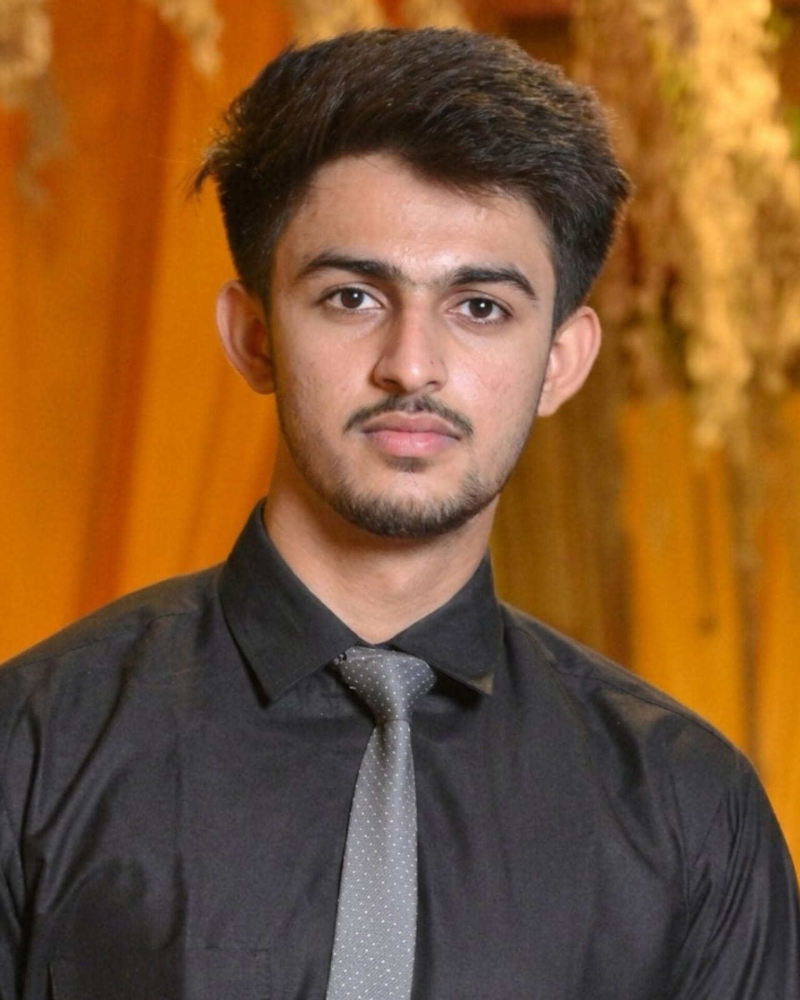
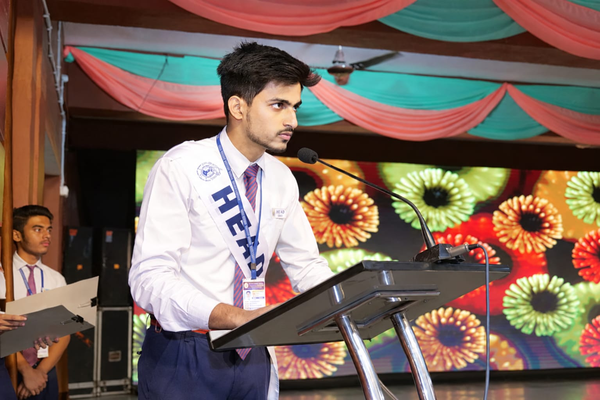
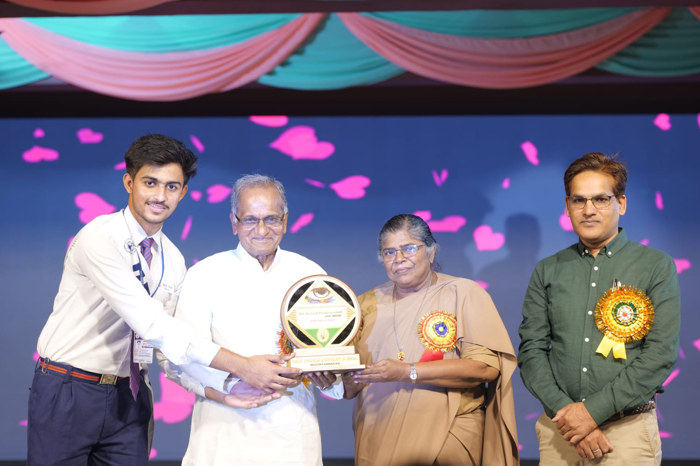
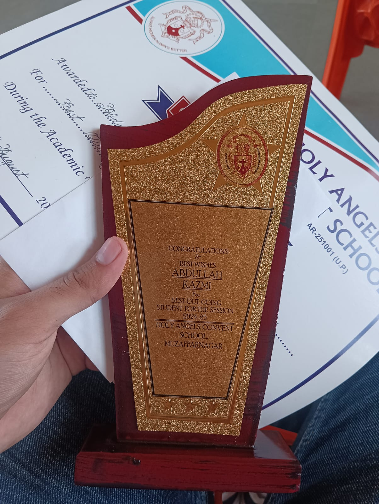

Introduction
I’m Syed Abdullah Kazmi, a first-year B.Tech student of Computer Science and Engineering with a specialisation in Cyber Security at Vellore Institute of Technology (VIT), Vellore, graduating in 2030. I come from Muzaffarnagar, Uttar Pradesh, where I studied at Holy Angels’ Convent School and served as Head Boy and House Captain before being named Best Outgoing Student of 2024–25.
I chose computer science because I enjoy turning an idea into something that really works, and I chose cyber security because every useful system also needs someone who can protect it. I want to become a software engineer who writes secure code, and to grow into ethical hacking: finding weaknesses before attackers do, so that people can trust the technology they use every day.
This portfolio walks through my journey so far. Projects shows what I built, how I built it and what came out of it. Teaching covers my three years as a maths tutor. Courses describes what I have learned at VIT, Writing presents samples of my work, and Resume gives a one-page summary.
Skills
Beyond the Code


